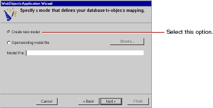

Creating a WebObjects Database Application
PATH
WebObjects 4.0 Documentation >
Getting Started With WebObjects
 Table of Contents
Table of Contents  Previous Section
Previous Section
Specifying a Model File
A model associates database columns with instance variables of objects. It also specifies relationships between objects in terms of database join criteria. You typically create model files using the EOModeler application, but the wizard can create a first cut at a model as a starting point. Later on, you'll use EOModeler to modify the model created by the wizard.

- Choose "Create new model."
- Click Next.
Table of Contents  Next Section
Next Section